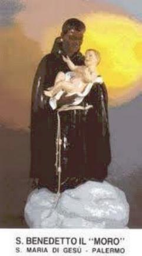

PALAVRAS INICIAIS
A perseverança é a palavra chave da santidade.
Quem vive ou viveu 
A humanidade foi feita para amar e verdadeiramente, ela só cresce no amor, embora existam muitas direções para se expandir. Em qualquer atividade ou manifestação do espírito, sem dúvida, a perseverança é a mais evidente e concreta prova de amor que uma criatura pode revelar. Isto por que, quem persevera é fiel. E a fidelidade é o termômetro da harmonia, da plena confiança e do amor sem fronteiras.
Este preâmbulo se faz necessário para realçar que em cada dia, a existência de São Benedito foi vivida assim, com extremoso amor, paciência e uma dedicada e constante perseverança. Cresceu no amor como crescem as árvores plantadas a beira da água. E as águas misericordiosas de DEUS foram torrenciais no quotidiano do Santo, que jamais deixou de beber delas com a sede da fé e de um profundo amor.
Desse modo, somos convidados pelo ESPÍRITO SANTO a concluir com um juízo bem elevado, sobre a santidade e fidelidade de Frei Benedito, lembrando oportunamente, as palavras do Salmo:
- “O homem justo crescerá como a palmeira e florescerá como o cedro do Líbano plantado na Casa do SENHOR. Mesmo na velhice dará frutos cheios de seiva e verdejantes”. (Sl 91)
Benedito praticamente não conheceu a velhice, viveu apenas 63 anos de idade, trabalhando intensamente todos os dias, seja no campo, no Eremitério de Frei Lanza ou no Convento de Santa Maria de JESUS. Para quem, como ele, que desejava ardentemente o Céu, sem dúvida nenhuma, foi uma longa espera. Mas nunca foi de se poupar, sempre mostrou disposição para solucionar todos os problemas ou realizar todos os trabalhos necessários a Comunidade Religiosa. Com certeza ele mantinha presente no coração o adágio bíblico: “quem se poupa em demasia pode até aumentar o número dos anos da sua vida, mas diminuirá os seus merecimentos na eternidade”.
Desgastar as energias por amor a DEUS e aos irmãos é contribuir com uma apreciável quota para o engrandecimento do Reino Divino. São João afirma isto no Evangelho de JESUS:
“Quem ama a sua vida, irá perdê-la, e quem aborrece sua vida, irá conservá-la para a vida eterna”. (Jo 12,25)
Frei Benedito foi assim, um servo fiel e prudente, e, com isso, atingiu uma santidade imensa, com dimensões que ultrapassa uma consciente estimativa. Ele sempre estava disponível e com indizível amor atendia a todos, o grande e o pequeno, o conhecido, o estrangeiro e aquele que aparecia pela primeira vez, com a mesma atenção e o maior respeito, e se portava assim, para a maior honra e gloria do SENHOR DEUS.
Este é o Benedito que vão encontrar aqui, um homem simples, modesto e humilde, filho de escravos trazidos da longínqua África, nascido no calor e no aconchego do solo italiano, e que foi possuidor de um espírito inigualável, essencialmente cultivador do respeito, da obediência, da harmonia vivencial e da paz. O Amor de DEUS derramado em seu coração transbordava por suas palavras, pelos ensinamentos e pela lógica de seu procedimento exemplar. Alguém poderia perguntar: mas como foi possível Benedito alcançar patamares tão elevados, se ele era analfabeto, e por sua grande pobreza não pode frequentar os estudos e não sabia ler e nem escrever? Mas Benedito tinha uma alma dedicada e um coração puro. No dia do seu batizado o ESPÍRITO SANTO ocupou todo o seu interior e edificou os melhores e mais consistentes baluartes naquele terreno propício e fértil. O resto? Sim o resto, foi maravilhosamente burilado e trabalhado pela força e o poder da Luz de DEUS que iluminou intensamente a sua vida.
Nós do APOSTOLADO DOS SAGRADOS CORAÇÕES conhecíamos São Benedito e o seu admirável poder intercessor. Mas não conhecíamos o seu coração e nem a sua alma, e por isso, realizamos todas as pesquisas e estudos, que nos conduziram a lhes apresentar este precioso Site.
No cotidiano, vão encontrar algumas denominações para o Santo até meio estranhas. Não levem a sério, façam exatamente igual ao Santo. Alguns o denominam de Santo Preto, italianos e os franceses o chamam "il Moro" e "le More" (que significa o Moreno) para não confundir com São Bento, pois em francês, São Bento e São Benedito se escreve do mesmo modo "Benoît". Nós com muita honra, o denominamos SÃO BENEDITO do MENINO JESUS e da VIRGEM MARIA, o querido e admirável Santo amigo de muitos e muitos brasileiros e de todos nós.
APOSTOLADO DOS SAGRADOS CORAÇÕES
http://www.apostoladosagradoscoracoes.com/